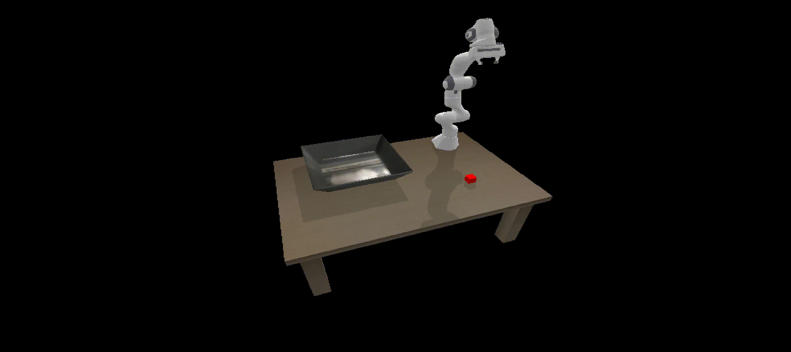

October 2025
Current Robot learning methods are constrained by poor sample efficiency, limited generalization, and robot specific state and action representations. Many successful methods rely on task-specific data collection, embodiment focused tuning, carefully engineered design spaces. This project systematically studies robot learning methods along three fundamental axes: Sample efficiency, robustness across tasks and embodiments, and multimodal representations.
Demonstration of a learned policy performing a simple pick-and-place task.
Sample efficient learning enables robots to learn complex real-world skills from fewer interactions with the environment. Collecting such data in the real-world is often time-consuming and expensive. Recent advances promise sample efficiency through methods such as imitation learning, Sim2Real transfer and active learning methods. However, many of these approahes require extensive task specific data collection or careful fine-tuning to bridge the Sim2Real gap. In this work, we study different Robot learning appraoches entirely in simulation and compare their performance, aiming to identify the key characteristics in generalizable manipulation. Sample efficiency is studied by analyzing how quickly each method learns, from task-specific to more general tasks, across different modalities. A single-object pick-and-place task was successfully demonstrated using the Soft-Actor Critic Algorithm, and we are currently exploring additional methods to present a comparative study.
Maintaining consistent performance across diverse environments and tasks is imperative for deploying robots at scale. This consistency ensures that systems remain safe, reliable, and predictable in dynamic real-world settings. Our research explores the fundamental mechanisms of skill acquisition, the transfer of these skills to novel tasks and embodiments, and the generalization of learned policies to handle unexpected environmental variations.
We also investigate diverse environment representations, including proprioception, visual feedback, and task-space coordinates, to evaluate the impact of different sensory modalities on learning efficiency. By analyzing how these inputs interact, we aim to determine the optimal fusion of data required for high-precision control. This exploration allows us to identify most robust signals for the agent to reliably execute its tasks.